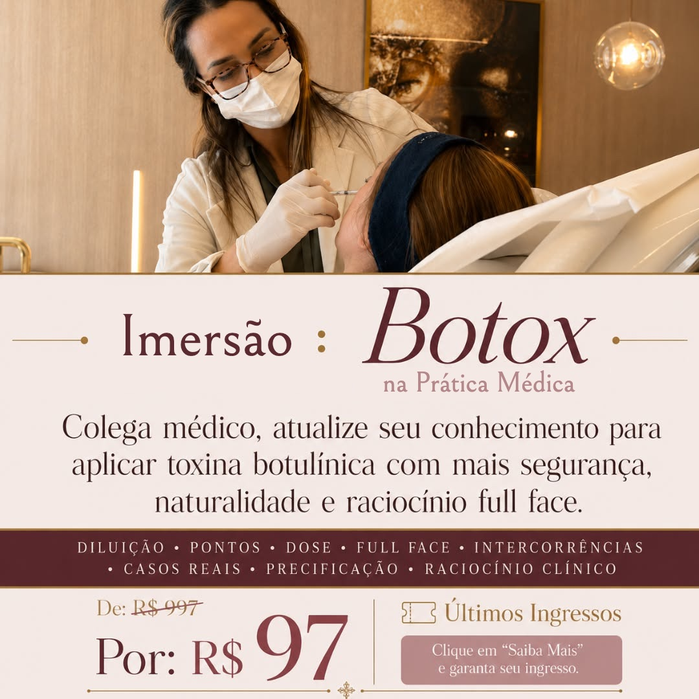
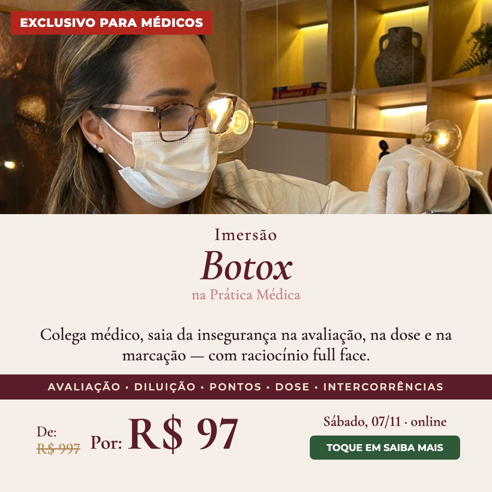
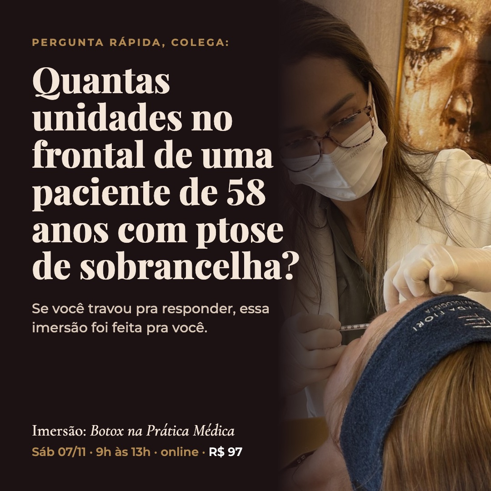
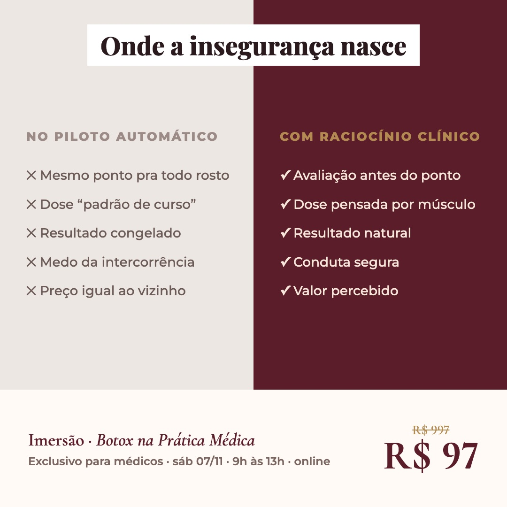
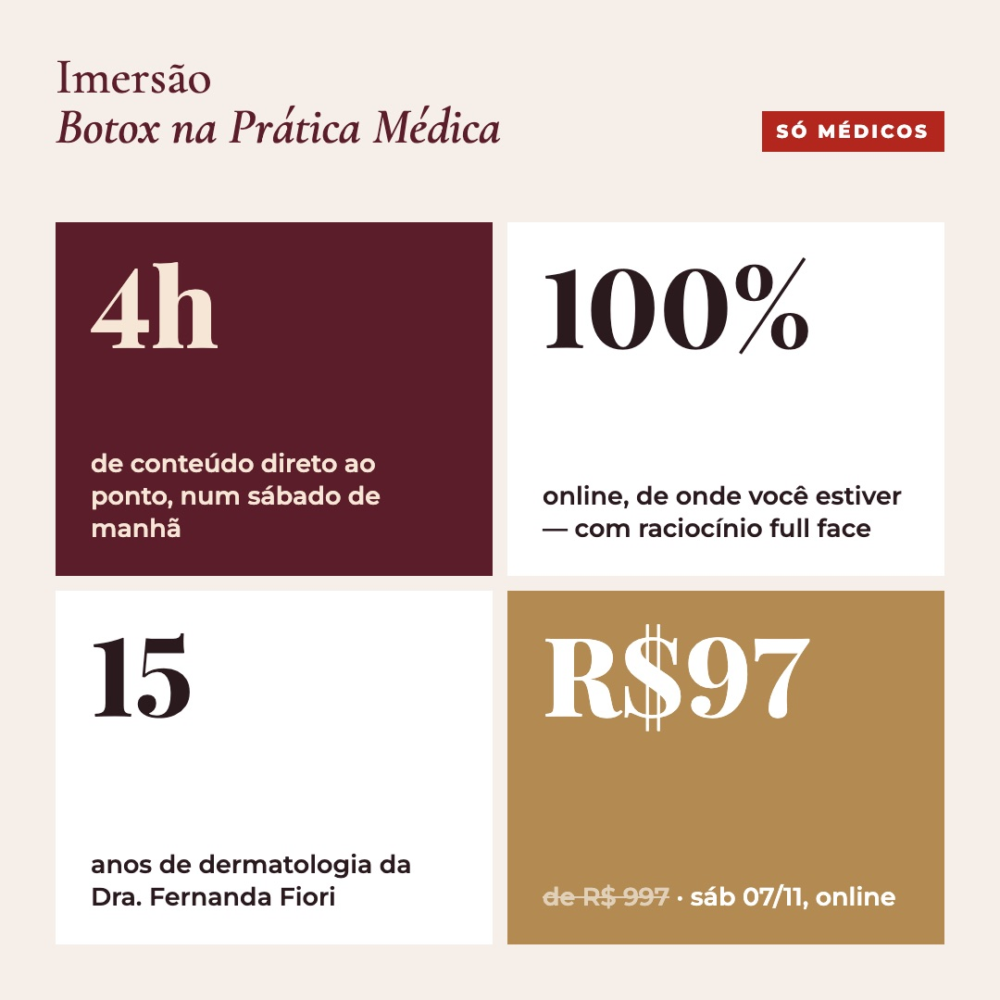
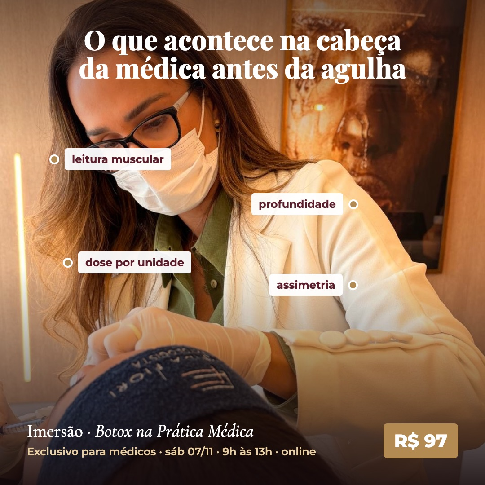
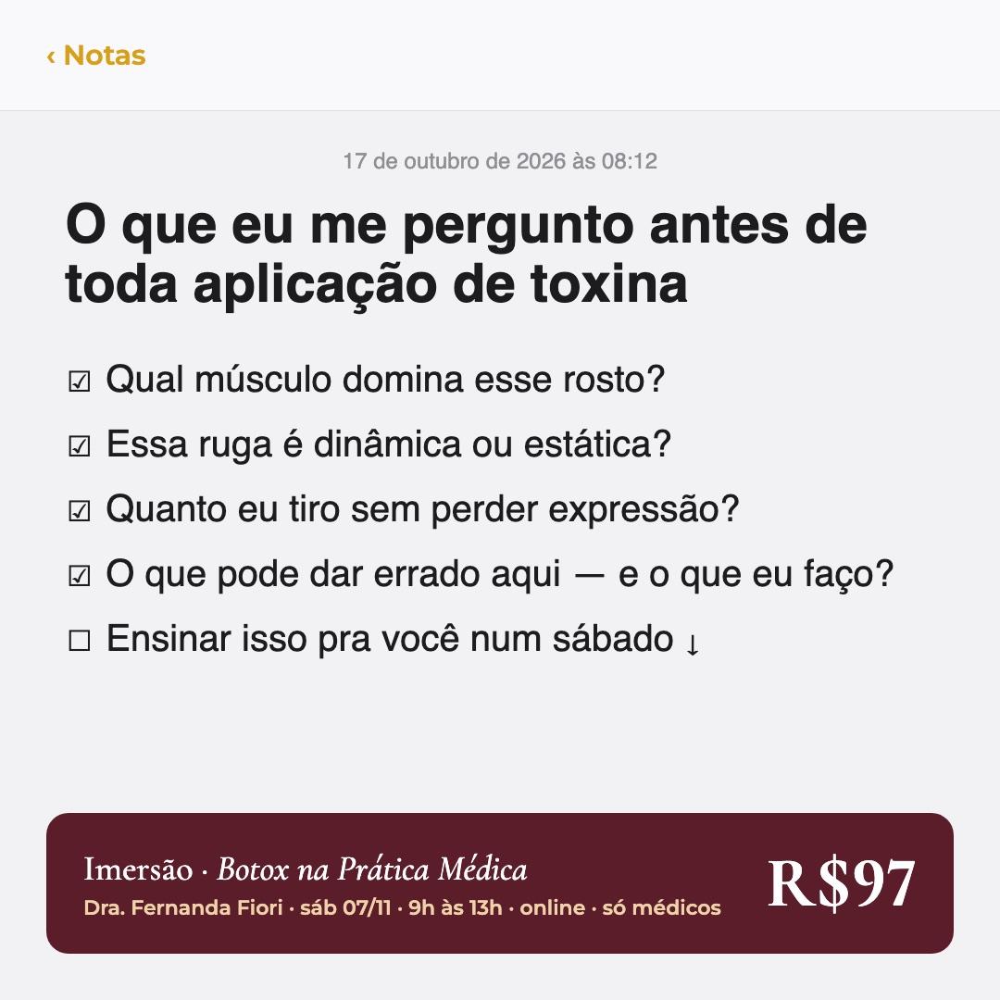

Dra. Fernanda Fiori · Imersão: Botox na Prática Médica
Novos anúncios para a próxima turma
Partimos dos anúncios que mais trouxeram inscrições: foto real da Dra. aplicando, conversa direta com o médico, preço com âncora e a lista do que se aprende. Cada peça nova mostra ao lado a referência que a originou.
Para confirmar antes de subir: as artes trazem sábado, 07/11, das 9h às 13h, online. Se a data ou o horário forem outros, ajustamos todas as peças.
As três referências, com o nome novo
Os anúncios que mais trouxeram inscrições, com a mesma arte e o nome atualizado para "Imersão: Botox na Prática Médica".

065068076
10 anúncios novos
Formatos diferentes entre si, para o Meta encontrar o que funciona melhor em cada público.
182
Campeão com foto nova

Anúncio novoReferência: Anúncio 068
Mesmo layout do 065 e do 068: foto em cima, "Colega médico", temas na faixa e preço com âncora. Troca só a foto da aplicação.
Ver título e texto do anúncio
Título: Chega de Insegurança na Hora de Aplicar Toxina Botulínica
Colega médico, chega de insegurança para avaliar, planejar e aplicar botox com resultado natural.
Na Imersão: Botox na Prática Médica, você vai aprender como:
✅ Avaliar o rosto antes de definir pontos e dose ✅ Entender diluição, unidades, marcação e raciocínio full face ✅ Aplicar com mais segurança, naturalidade e previsibilidade ✅ Evitar resultados artificiais e conduzir intercorrências com mais critério ✅ Precificar melhor, comunicar valor e fidelizar seus pacientes
📅 Sábado, 07/11, das 9h às 13h · online · ingresso R$ 97 (de R$ 997)
👉 Toque em SAIBA MAIS e garanta sua vaga.
FF_PG_CAPTACAO_FEED_IMG01_182
183
Pergunta clínica

Anúncio novoReferência: Anúncio 114
Do 114 vem o fundo escuro com a Dra. aplicando. A novidade é abrir com uma pergunta de caso que o médico precisa responder de cabeça.
Ver título e texto do anúncio
Título: Você saberia responder?
Pergunta rápida, colega: quantas unidades no frontal de uma paciente de 58 anos com ptose de sobrancelha?
Se você hesitou, essa manhã é pra você.
Na Imersão: Botox na Prática Médica, você vai aprender como:
✅ Avaliar o rosto antes de definir pontos e dose ✅ Entender diluição, unidades, marcação e raciocínio full face ✅ Aplicar com mais segurança, naturalidade e previsibilidade ✅ Evitar resultados artificiais e conduzir intercorrências com mais critério ✅ Precificar melhor, comunicar valor e fidelizar seus pacientes
📅 Sábado, 07/11, das 9h às 13h · online · ingresso R$ 97 (de R$ 997)
👉 Toque em SAIBA MAIS e garanta sua vaga.
FF_PG_CAPTACAO_FEED_IMG01_183
184
Receituário
Anúncio novoReferência: Anúncio 065
A lista do que se aprende, que está em todos os anúncios que mais venderam, vira uma prescrição escrita à mão pela Dra.
Ver título e texto do anúncio
Título: A receita para aplicar com segurança
Uma prescrição para quem aplica toxina e ainda sente insegurança na avaliação, na dose ou na marcação.
Na Imersão: Botox na Prática Médica, você vai aprender como:
✅ Avaliar o rosto antes de definir pontos e dose ✅ Entender diluição, unidades, marcação e raciocínio full face ✅ Aplicar com mais segurança, naturalidade e previsibilidade ✅ Evitar resultados artificiais e conduzir intercorrências com mais critério ✅ Precificar melhor, comunicar valor e fidelizar seus pacientes
📅 Sábado, 07/11, das 9h às 13h · online · ingresso R$ 97 (de R$ 997)
👉 Toque em SAIBA MAIS e garanta sua vaga.
FF_PG_CAPTACAO_FEED_IMG01_184
185
Piloto automático × raciocínio

Anúncio novoReferência: Anúncio 178
Do 178 vem a ideia de raciocínio clínico contra ponto decorado. Aqui ela aparece como comparação lado a lado.
Ver título e texto do anúncio
Título: Onde a insegurança nasce
Mesmo ponto para todo rosto, dose "padrão de curso", medo da intercorrência. É aí que a insegurança nasce, e é isso que a imersão resolve.
Na Imersão: Botox na Prática Médica, você vai aprender como:
✅ Avaliar o rosto antes de definir pontos e dose ✅ Entender diluição, unidades, marcação e raciocínio full face ✅ Aplicar com mais segurança, naturalidade e previsibilidade ✅ Evitar resultados artificiais e conduzir intercorrências com mais critério ✅ Precificar melhor, comunicar valor e fidelizar seus pacientes
📅 Sábado, 07/11, das 9h às 13h · online · ingresso R$ 97 (de R$ 997)
👉 Toque em SAIBA MAIS e garanta sua vaga.
FF_PG_CAPTACAO_FEED_IMG01_185
186
Ingresso
Anúncio novoReferência: Anúncio 065
Foto da aplicação e preço com âncora, como no 065, apresentados em forma de ingresso com data, horário e local.
Ver título e texto do anúncio
Título: Seu ingresso: R$ 97
Seu ingresso para uma manhã de toxina botulínica com raciocínio clínico, ao lado da Dra. Fernanda Fiori.
Na Imersão: Botox na Prática Médica, você vai aprender como:
✅ Avaliar o rosto antes de definir pontos e dose ✅ Entender diluição, unidades, marcação e raciocínio full face ✅ Aplicar com mais segurança, naturalidade e previsibilidade ✅ Evitar resultados artificiais e conduzir intercorrências com mais critério ✅ Precificar melhor, comunicar valor e fidelizar seus pacientes
📅 Sábado, 07/11, das 9h às 13h · online · ingresso R$ 97 (de R$ 997)
👉 Toque em SAIBA MAIS e garanta sua vaga.
FF_PG_CAPTACAO_FEED_IMG01_186
187
Autoridade
Anúncio novoReferência: Anúncio 114
Do 114 vem a frase dos 15 anos de dermatologia. Aqui ela ganha o retrato da Dra. e vira o destaque da peça.
Ver título e texto do anúncio
Título: 15 anos de dermatologia em uma manhã
15 anos de dermatologia condensados em uma manhã: tudo o que eu olho antes de aplicar toxina.
Na Imersão: Botox na Prática Médica, você vai aprender como:
✅ Avaliar o rosto antes de definir pontos e dose ✅ Entender diluição, unidades, marcação e raciocínio full face ✅ Aplicar com mais segurança, naturalidade e previsibilidade ✅ Evitar resultados artificiais e conduzir intercorrências com mais critério ✅ Precificar melhor, comunicar valor e fidelizar seus pacientes
📅 Sábado, 07/11, das 9h às 13h · online · ingresso R$ 97 (de R$ 997)
👉 Toque em SAIBA MAIS e garanta sua vaga.
FF_PG_CAPTACAO_FEED_IMG01_187
188
Números

Anúncio novoReferência: Anúncio 076
Do 076 vem o preço com âncora e o "só para médicos". Aqui eles entram numa grade com os números da imersão.
Ver título e texto do anúncio
Título: 4 horas. R$ 97. Só para médicos.
4 horas, 1 sábado, 100% online e R$ 97. Uma imersão direta ao ponto, só para médicos.
Na Imersão: Botox na Prática Médica, você vai aprender como:
✅ Avaliar o rosto antes de definir pontos e dose ✅ Entender diluição, unidades, marcação e raciocínio full face ✅ Aplicar com mais segurança, naturalidade e previsibilidade ✅ Evitar resultados artificiais e conduzir intercorrências com mais critério ✅ Precificar melhor, comunicar valor e fidelizar seus pacientes
📅 Sábado, 07/11, das 9h às 13h · online · ingresso R$ 97 (de R$ 997)
👉 Toque em SAIBA MAIS e garanta sua vaga.
FF_PG_CAPTACAO_FEED_IMG01_188
189
Anotações na foto

Anúncio novoReferência: Anúncio 065
A foto real da aplicação, base do 065, ganha marcações do que a médica avalia antes da agulha.
Ver título e texto do anúncio
Título: O que acontece antes da agulha
Antes da agulha entrar, a médica já leu o músculo, a profundidade, a dose e a assimetria. É esse raciocínio que você vai aprender.
Na Imersão: Botox na Prática Médica, você vai aprender como:
✅ Avaliar o rosto antes de definir pontos e dose ✅ Entender diluição, unidades, marcação e raciocínio full face ✅ Aplicar com mais segurança, naturalidade e previsibilidade ✅ Evitar resultados artificiais e conduzir intercorrências com mais critério ✅ Precificar melhor, comunicar valor e fidelizar seus pacientes
📅 Sábado, 07/11, das 9h às 13h · online · ingresso R$ 97 (de R$ 997)
👉 Toque em SAIBA MAIS e garanta sua vaga.
FF_PG_CAPTACAO_FEED_IMG01_189
190
Notas do celular

Anúncio novoReferência: Anúncio 178
O 178 fala na primeira pessoa ("uma manhã de sábado comigo"). Aqui a voz da Dra. vai para o formato de nota do iPhone.
Ver título e texto do anúncio
Título: O que eu me pergunto antes de aplicar
Antes de toda aplicação de toxina, eu passo por 4 perguntas. Num sábado, eu te ensino cada uma.
Na Imersão: Botox na Prática Médica, você vai aprender como:
✅ Avaliar o rosto antes de definir pontos e dose ✅ Entender diluição, unidades, marcação e raciocínio full face ✅ Aplicar com mais segurança, naturalidade e previsibilidade ✅ Evitar resultados artificiais e conduzir intercorrências com mais critério ✅ Precificar melhor, comunicar valor e fidelizar seus pacientes
📅 Sábado, 07/11, das 9h às 13h · online · ingresso R$ 97 (de R$ 997)
👉 Toque em SAIBA MAIS e garanta sua vaga.
FF_PG_CAPTACAO_FEED_IMG01_190
191
Salve a data
Anúncio novoReferência: Anúncio 076
Do 076 vem o "exclusivo para médicos" e a foto da Dra. aplicando. A data vira o destaque, em forma de calendário.
Ver título e texto do anúncio
Título: Sábado, 07/11: salve na agenda
Salve na agenda, colega: sábado, 07/11, uma manhã para aplicar toxina com segurança e naturalidade.
Na Imersão: Botox na Prática Médica, você vai aprender como:
✅ Avaliar o rosto antes de definir pontos e dose ✅ Entender diluição, unidades, marcação e raciocínio full face ✅ Aplicar com mais segurança, naturalidade e previsibilidade ✅ Evitar resultados artificiais e conduzir intercorrências com mais critério ✅ Precificar melhor, comunicar valor e fidelizar seus pacientes
📅 Sábado, 07/11, das 9h às 13h · online · ingresso R$ 97 (de R$ 997)